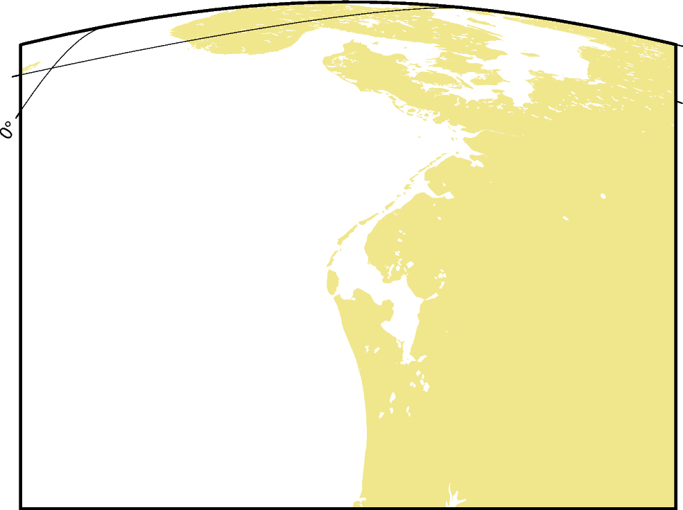

Note
Click here to download the full example code
General Perspective
The general perspective projection imitates the view of the Earth from a finite point in space. In a full view of the earth one third of its surface area can be seen.
glon0/lat0/scale[+aazimuth][+ttilt][+vvwidth/vheight][+wtwist][+zaltitude] or Glon0/lat0/width[+aazimuth][+ttilt][+vvwidth/vheight][+wtwist][+zaltitude]
The projection type is set with g or G. lon0/lat0 specifies the projection center and scale or width determine the size of the figure. With +aazimuth the direction (in degrees) in which you are looking is specified, measured clockwise from north. +ttilt is given in degrees and is the viewing angle relative to zenith. A tilt of 0° is looking straight down, 60° is looking 30° above horizon. The viewport angle in degrees is described via +vvwidth/vheight and +wtwist is the clockwise rotation of the image (in degrees). +zaltitude sets the height in km of the viewpoint above local sea level (If altitude is less than 10, then it is the distance from the center of the earth to the viewpoint in earth radii).
The example shows the coast of Northern Europe viewed from 250 km above sea level looking 30° from north at a tilt of 45°. The height and width of the viewing angle is both 60°, which imitates viewing with naked eye.
Out:
coast [WARNING]: 1 annotations along the right border were skipped due to crowding.
coast [WARNING]: 1 annotations along the left border were skipped due to crowding.
coast [WARNING]: Crowding decisions is controlled by MAP_ANNOT_MIN_SPACING, currently set to 25.9467p.
coast [WARNING]: Decrease or increase MAP_ANNOT_MIN_SPACING to see more or fewer annotations, with 0 showing all annotations.
<IPython.core.display.Image object>
import pygmt
fig = pygmt.Figure()
fig.coast(
projection="G4/52/12c+a30+t45+v60/60+w0+z250",
region="g",
frame=["x10g10", "y5g5"],
land="gray",
)
fig.show()
Total running time of the script: ( 0 minutes 2.762 seconds)